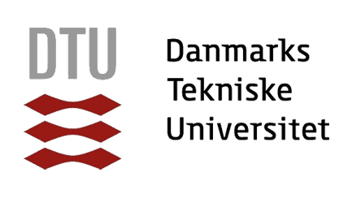

Education
B.S. in Physics
KAIST-affiliated High School
Research Experience
-
 KAIST
KAIST
Undergraduate Intern (PI: G.Y. Cho)Feb 2025 – PresentInvestigation of the error term of chiral central charge caused by deviations from a strict entanglement-area law.
-
 Nanyang Technological University
Nanyang Technological University
Undergraduate Intern (PI: N. Ng)Aug 2024 – Jan 2025(Ongoing) Exploring the correspondence between Gibbs-preserving covariant channels and thermal operations.
-
KAIST
Undergraduate Intern (PI: J.Y. Choi)Sep 2023 – Feb 2024Learned optical experimental techniques and built a Python-based GUI for a temperature-control system.
-
KAIST
Undergraduate Intern (PI: J.W. Ahn)Jun 2023 – Sep 2023Developed a Rydberg-atom-graph approach for solving QUBO problems.
Exchange Programmes
-

Technical University of Denmark
Short-term ExchangeSummer 2025Earned three credits.
-
Nanyang Technological University
Exchange ProgrammeAutumn 2024Research internship and completed 9 credits.
Quantum Information Study Group
-
Quantum Information Study Group
FounderApr 2024 – PresentOrganised a 15-member joint KAIST/SNU group to discuss quantum-information topics weekly.